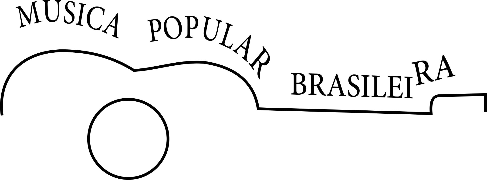

Design Digital
Design Digital

Fabiana Pupin Masson Caravieri
Mestranda em Ciência da Computação - Área de Concentração: Sistemas de Informação - Universidade Estadual Paulista "Júlio de Mesquita Filho" - UNESP - São José do Rio Preto/SP. Graduação em Tecnologia em Processamento de Dados pela Faculdade de Tecnologia da Alta Noroeste (Salesiano) - Araçatuba/SP. Especialização "Lato Sensu" em Computação - UfsCar e Fundação Educacional de Fernandópolis. Licenciatura Plena em Informática -Fatec Sorocaba. Professora dos Cursos Superiores em: Análise e Desenvolvimento de Sistemas, Gestão Empresarial e Sistemas para Internet da Fatec Prof. José Camargo de Jales. Responsável pelos projetos "Click Melhor Idade" e "Artes Gráficas" (Fatec Jales). Professora do Curso Técnico em Informática Integrado ao Ensino Médio da Etec "Dr. José Luiz Viana Coutinho" - Jales (Centro Estadual de Educação Tecnológica Paula Souza) Experiência na área de Ciência da Computação, atuando nos seguimentos: Design Digital, Engenharia de Software, Ensino Técnico, Superior e EaD. (Texto informado pelo autor)
Objetivos Gerais
Apresentar as bases do design gráfico de produção de sítios Internet com emprego de softwares. Projetar mock-ups (cenas) usando o software de design digital, em seguida implementar o projeto como um sítio Internet.
Objetivos Especificos
Identificar os principais componentes dos softwares para design gráfico: espaço de trabalho, canvas, painéis, ferramentas e menus. Definir padrões de cores e empregá-los em esquemas de cores. Definir, descrever e empregar os elementos de artes gráficas: o ponto, a linha, a forma, a direção, o tom, a cor, a textura, a dimensão, a escala e o movimento. Projetar logos e marcas. Desenvolver um logo para própria página. Descrever e utilizar camadas. Otimizar organização de arquivos para trabalho em equipe.
Conhecer e empregar os padrões de gravação de arquivos de imagem.
Escolher o programa mais adequado para tratamento de imagens. Definir e criar um guia com os quatro elementos básicos de qualquer sítio (cabeçalhos, navegação, conteúdo e rodapé) com aplicação de padrões de design, esquemas de cores e fontes tipográficas. Projetar vários estados de interação e comportamento. Criar um sítio completo com várias páginas com todos os elementos de design, HTML e CSS estudados no curso. Empregar os padrões de resolução de tela e impressão e saber converter medidas aplicadas ao desenvolvimento de sítios para Internet. Calcular tamanhos seguros dos layouts dos sítios Internet.
Alguns Projetos
